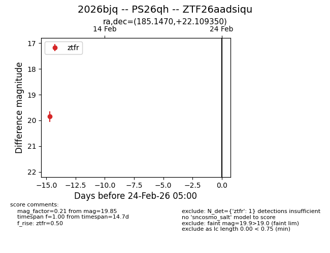
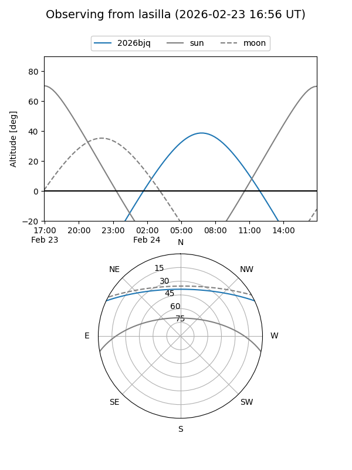
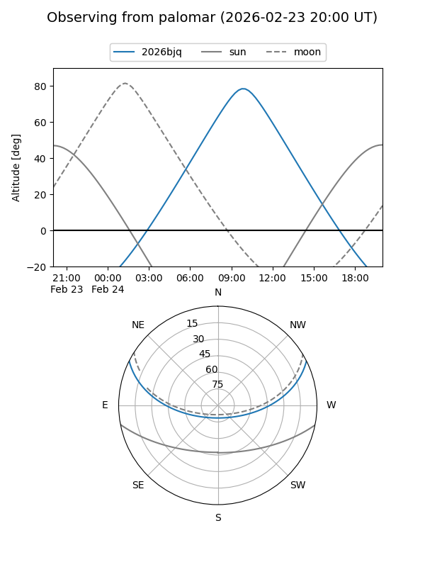

2026bjq
Target 2026bjq at 2026-02-24 09:08
Aliases and brokers:
FINK: link
Lasair: link
ALeRCE: link
TNS: link
YSE: link
alt names
ZTF26aadsiqu (ztf,fink_ztf)
2026bjq (tns,yse)
PS26qh (panstarrs)
Coordinates:
equatorial (ra, dec) = 185.1470,+22.10935
equatorial (HMS+DMS) = 12:20:35.28,+22:06:33.66
galactic (l, b) = (246.8681,+81.38111)
Flags:
Photometry:
last ztfr=19.85
1 ztfr detections
Lightcurve

Visibility


Additional plots